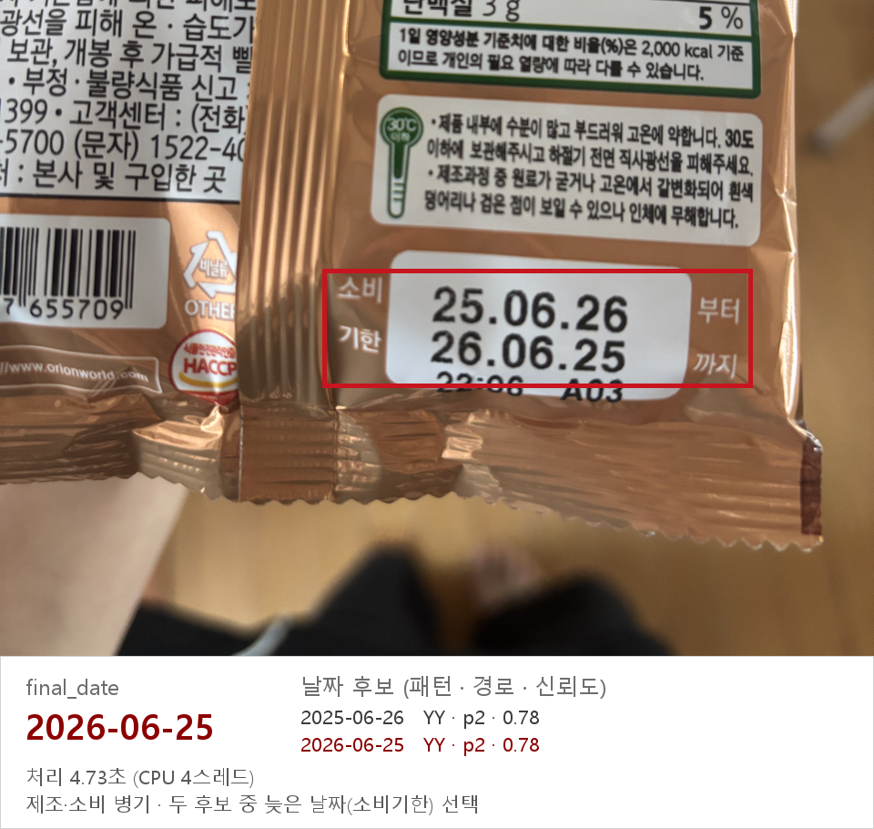

심사위원 : 컴퓨터비전 교수 · 스마트 제조·물류 교수 · 화학 기업 GMP 출하 표시물 자동화 담당
첫 구성은 500장에 2,905초로 이미 탈락이었다. 그래서 정확도보다 "끝까지 돌아가는가" 부터 풀었다
2. 기술 아키텍처 구조도 : 쉬운 사진은 한 번에, 어려운 사진에만 비용을본선 최종 구성 · 슬라이드 7번
기본 경로 모든 사진이 지나간다. 사진의 88% 는 여기서 1.8초에 끝난다
입력
방향 보정 640px 로 축소
▶
1탐지
글자 위치 찾기 PP-OCRv5 det · 5MB
▶
2인식
큰 글자부터 읽기 PP-OCRv5 rec · 8MB
▶
3주변 재탐지
옆에 숫자 줄이 있을 때만, 원본으로
▶
4다시 읽기
날짜 줄만 원본으로 다시 읽고 투표
▶
5규칙 해석
다른 숫자 제거 가장 늦은 날짜 선택
▶
출력
2026-07-02 또는 NONE
예비 경로 날짜 후보가 하나도 없는 사진(약 12%)만 차례로 시도한다. 읽히면 바로 45로 간다
1,024px 로 다시
축소를 덜 해서 한 번 더 읽기
▶
도트 전처리
점으로 찍힌 글씨의 점을 이어 붙임
▶
파인튜닝 인식기
우리 라벨로 학습한 인식기로 읽기 · 8MB
▶
2배 확대
작은 사진만 키워서 읽기
▶
NONE
그래도 없으면 날짜를 지어내지 않는다
시간 예산 가드 — 전체를 지켜본다. 최근 20장의 속도로 총 소요 시간을 예측해서 2,000초를 넘길 것 같으면 1단계 예비 경로 생략 → 2단계 다시 읽기 생략 → 3단계 남은 사진은 NONE. 어떤 컴퓨터에서든 결과 파일은 반드시 나온다. 9/28 에 PC 가 절전에 들어갔을 때 실제로 발동했다.
AI 모델 (공개 사전학습)우리가 짠 규칙·로직조건이 맞을 때만
모델 전체 21MB (탐지 5 + 인식 8 + 파인튜닝 인식 8). 실행 파일은 predict.ipynb 하나. 한국어 인식기로 한 번 더 읽는 단계는 시간 여유를 위해 기본으로 꺼 두었다.
AI 는 "읽기" 만 하고, 어느 숫자가 소비기한인지는 설명할 수 있는 규칙 이 정한다
3. 단계별로 하는 일 : 사람이 날짜를 찾는 순서와 같다슬라이드 7 · 13 · 14번
단계
사람이라면
프로그램은
이렇게 한 이유
1탐지
글자가 어디 있나 훑어본다
사진을 640px 로 줄여 글자 위치(상자)를 찾는다. 장당 한 번만
탐지 시간은 픽셀 수에 비례. 480px 로 더 줄이면 정확도가 무너진다
2인식
글자를 읽는다
큰 글자부터 8개씩 묶어 읽는다. 날짜를 찾으면 그 글자 크기의 0.6배보다 작은 글씨는 건너뛴다
날짜 도장은 영양성분표 잔글씨보다 크다. 제조일·소비기한 짝은 크기가 같아 둘 다 읽힌다
3주변 재탐지
옆 줄에 날짜가 더 있나 본다
날짜 줄 위아래에 비슷한 크기의 숫자 줄이 있으면 그 주변만 원본 해상도로 다시 탐지
줄인 사진에서 두 번째 날짜가 뭉개져 읽히는 경우를 살린다
4다시 읽기
헷갈리면 가까이 본다
날짜 줄만 원본에서 잘라 다시 읽고 첫 결과와 투표. 고치기만 하고 지우지는 못한다
예전에는 맞게 읽은 답을 이 단계가 지웠다 (111장)
5규칙 해석
이게 소비기한이 맞나 판단
날짜 형식을 정리하고, 바코드 같은 숫자를 버리고, 남은 후보 중 하나를 고른다
왜 그 날짜를 골랐는지 설명할 수 있다
예비 경로
안 보이면 각도를 바꿔 본다
후보가 없을 때만 해상도 올리기 → 도트 전처리 → 파인튜닝 인식기 → 확대
어려운 사진에만 시간을 쓴다. 평균 약 +1초

실제 실행 결과 (슬라이드 14번). 빨간 상자가 고른 날짜 줄. 25.06.26(제조) 과 26.06.25(소비) 를 둘 다 읽고 늦은 쪽을 골랐다.
비용이 큰 단계는 전부 조건부 다. 그래서 어려운 사진을 포기하지 않으면서도 빠르다
4. 소비기한을 고르는 규칙과 병기 처리슬라이드 9번 · 식별력 20점 항목
포장에는 날짜처럼 생긴 숫자가 많다
헷갈리는 숫자
예
규칙
품목보고번호 · 바코드
20130628332176
9자리 이상 숫자는 통째로 지운다
영양성분표 · 중량
78 7 5 31
신뢰 등급 : 점·하이픈으로 구분된 완전한 날짜가 항상 우선
제조일 + 소비기한
25.06.26 / 26.06.25
가장 좋은 등급 안에서 가장 늦은 날짜
시각 · 로트번호
13:11 / A03
날짜 패턴에서 제외
연·월·일 순서
26.03.20
기본은 년.월.일. 말이 안 되거나 연도가 2028 이상이면 일.월.년
범위 밖 연도
2033, 2009
2017 ~ 2031 만 인정
후보 없음
—
추측하지 않고 NONE
연월일 순서의 기본값은 감이 아니라 우리가 단 라벨 통계로 정했다 (2자리 세 개 표기 : 년월일 344장, 일월년 102장).
병기 = 제조일과 소비기한이 같이 찍힌 사진 (전체의 약 10%)
자주 나오는 오해 : "날짜를 하나 찾으면 읽기를 끝내서 제조일만 읽는다" → 초기 버전의 문제였고 고쳤다. 지금은 찾은 날짜보다 훨씬 작은 글씨만 건너뛴다.
병기 오답의 원인 (예선 구성, 83장)
장수
소비기한 줄을 깨지게 읽거나 잘못 읽음
31
아예 못 읽음
17
소비기한 줄이 탐지되지 않음
12
둘 다 읽었는데 잘못 고름
12
다시 읽기가 날짜를 바꿈
8
고친 방법
주변 재탐지 : 이웃 줄을 원본 해상도로 다시 읽어 후보에 추가 (병기 +5장 / −1장, 다른 사진 영향 0)
다시 읽기는 지우지 못하게, 해석 규칙 4개 (구분자 일치, 꼬리 숫자, 깨진 줄 다시 읽기, 연월 구분자 빠짐)
결과 : 병기 정확도 64.9% → 78.3% (판정용 299장). 남은 오답은 글자 자체가 안 읽히는 경우라 규칙으로는 더 줄이기 어렵다.
규칙마다 어떤 오답에서 나왔는지 와 몇 장을 얻고 잃었는지 가 기록돼 있다
5. 모델 선정 과정 : 속도 때문에 바꿨는데 정확도도 올랐다슬라이드 12번 · 모델 선택 근거 15점
#
구성
정확도
장당 시간
판단
1
EasyOCR (탐지 CRAFT + 인식 english_g2)
39.1%
약 5초
출발점. 느리고 부정확
2
1+ 후처리 규칙 5개 수정
44.4%
3
인식기만 교체 : PP-OCRv3
53.4%
5.8초
정확도는 올랐지만 시간 초과 (500장 2,905초). 탐지기가 시간의 절반 이상
인식기만 교체 : PP-OCRv4
58.6%
인식기만 교체 : PP-OCRv5
60.9%
4
탐지기도 교체 : PP-OCRv5 mobile det
67.7%
1.8초
채택
정확도는 초기 라벨 133장 기준. 3은 같은 사진 · 같은 규칙 · 같은 탐지기로 인식기만 바꾼 공정한 비교다. 호출당 시간은 v3·v4·v5 가 70ms 안팎으로 같아 가장 정확한 v5 를 골랐다.
처음 계획은 YOLO 3단계 탐지였다
소비기한 영역 → 날짜 블록 → 연·월·일 토큰을 YOLO 세 개로 찾으려 했다.
보류한 이유 : 학습에 필요한 상자 정답이 0장이었고, 탐지기 교체만으로 속도와 정확도가 같이 풀렸다.
쓰지 않은 것 · 버린 것
후보
결과
이유
TrOCR 등 Transformer OCR
검토만
200MB 이상, CPU 에서 느림
파인튜닝 인식기를 다시 읽기에
+86 / −64
맞던 답을 흔든다
합성 도트 글자 3,000장 학습
정밀도 84 → 81%
진짜 글씨를 대충 읽게 됨
인식기 셋 다수결
+8 / −4
퇴보가 많고 +0.43초
탐지 해상도 올리기
±1%p
시간만 +30~50%
한국어 인식기로 한 번 더
+7 / −2
시간이 한도의 94% → 기본 끔
파인튜닝은 버리지 않고 자리를 바꿨다. 기본 인식기가 못 읽은 사진에만 쓰면 +7 / −0. 학습은 무료 구글 코랩(T4)에서 약 1.5시간, 비용 0원.
"+86 / −64" 읽는 법 : 새로 맞힌 사진 86장, 원래 맞다가 틀려진 사진 64장.
"왜 더 큰 모델을 안 썼나" → 4코어 CPU · 2,500초 가 한도다. 가벼운 모델 중에서 가장 정확한 것을 골랐다
6. 검증 방법 : 점수가 올라도 버렸다슬라이드 5 · 8 · 12번 · 설계 논리 25점
1정답을 직접 달았다
날짜 해석 규칙을 문서로 먼저 정하고, 5명이 3,352장 전부에 라벨을 달았다. 라벨러는 포장에 찍힌 그대로만 입력하고 해석은 도구가 규칙으로 처리한다.
2시험지를 봉인했다
500장은 따로 떼어 학습과 규칙 도출에 쓰지 않고 점수 잴 때만 썼다. 기능을 넣을지 말지는 나머지 2,852장에서 판정했다.
3회복과 퇴보를 따로 셌다
새로 맞힌 사진(회복)과 맞다가 틀려진 사진(퇴보)을 따로 센다. 퇴보가 회복의 1/3 을 넘으면 점수가 올라도 기각.
오답을 "정답이 어느 단계에서 사라졌나"로 나눴다 (예선 구성 오답 603장)
단계
장수
본선 처방
결과
못 읽음 : 후보가 없음
183
주변 재탐지, 확대, 파인튜닝 재시도
+25 / −1
잘못 읽음 : 숫자 오독
290
해석 규칙, 깨진 줄 다시 읽기
+36 / −2
읽었다가 지움
111
1차 후보를 지우지 못하게
+53 / −5
잘못 고름
19
구분자 일치 규칙
+10 / −0
"읽었다가 지움"은 AI 문제가 아니라 우리 코드의 문제였다. 원인을 나누니 모델을 키우는 대신 가장 싼 처방을 고를 수 있었다.
정답도 의심했다
오답을 사람이 다시 보니 라벨이 틀린 게 23장 (봉인 500장 7장 + 판정용 16장).
그중 16장은 모델이 맞고 사람이 틀린 것이었다.
사람도 날짜를 옮겨 적다가 틀린다 → 도메인에서 "사람과 모델이 서로 확인한다"의 근거.
솔직하게 말할 것
봉인 500장은 완전 무오염은 아니다. 예선 때 단계별 효과를 여기서 확인했고, 오답을 보고 라벨 7장을 고쳤다. 본선의 규칙 도출과 채택 판정은 전부 2,852장에서 했다.
튜닝에 쓴 사진(86.7%)과 안 쓴 사진(86.2%)의 점수가 비슷하다 → 과적합이 아니라는 근거.
모든 실험의 예측 파일과 기록이 저장소에 있다 : results/ · docs/실험_기록.md